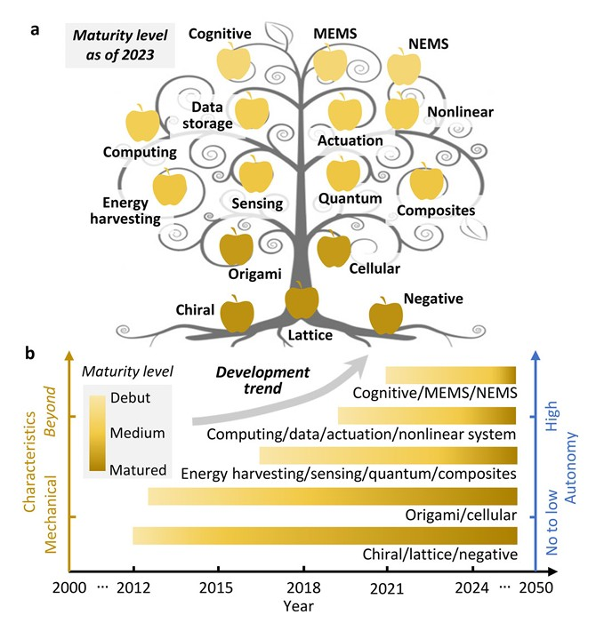
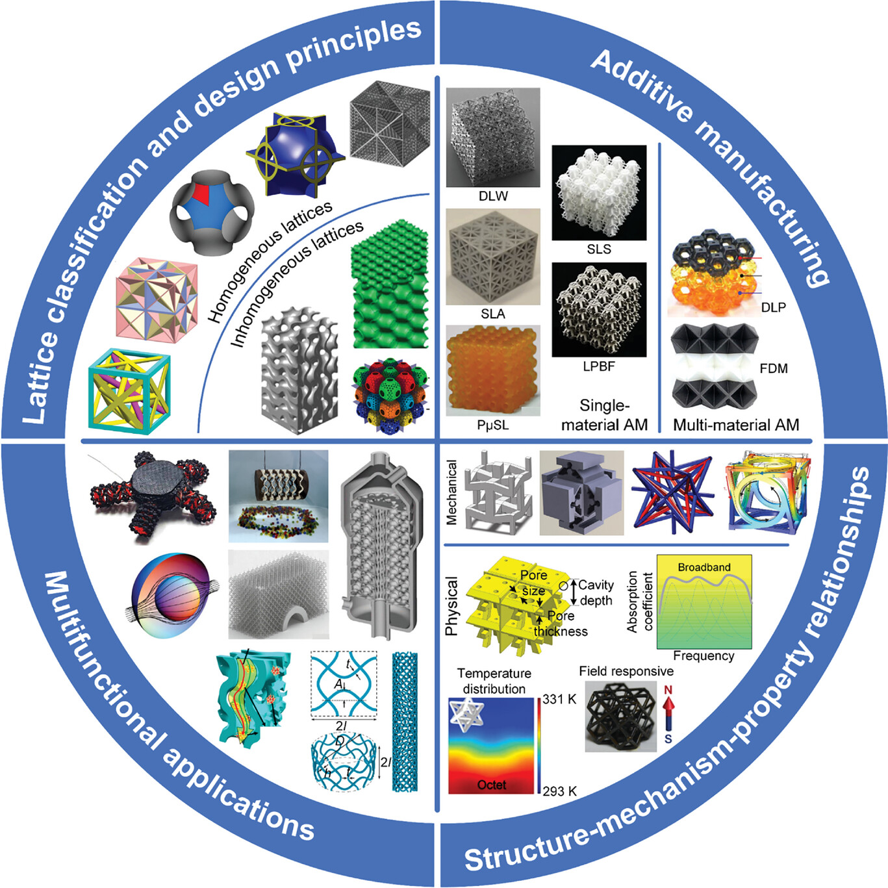
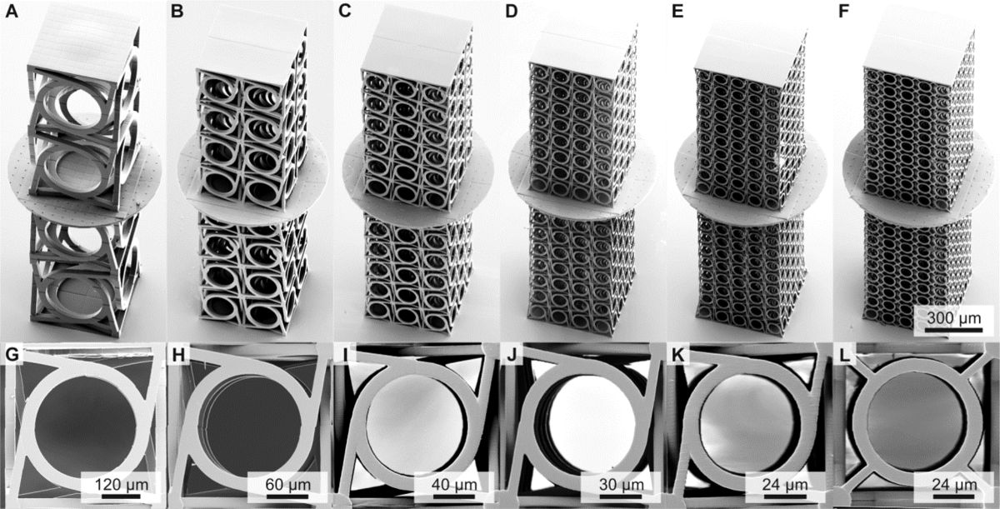
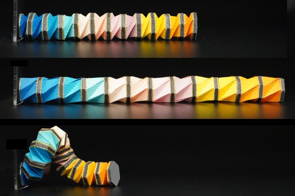
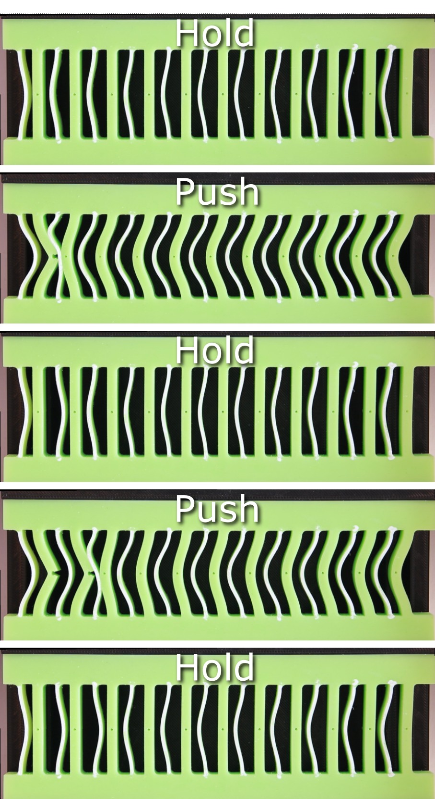
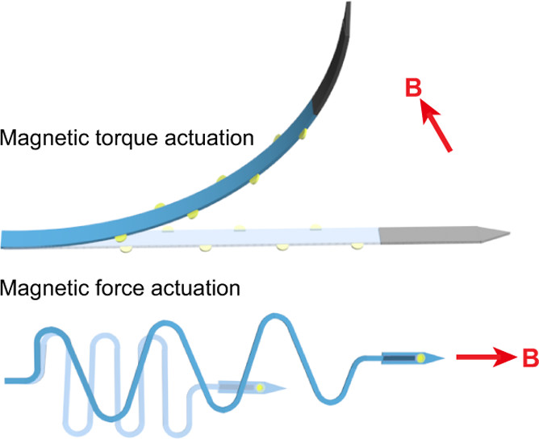
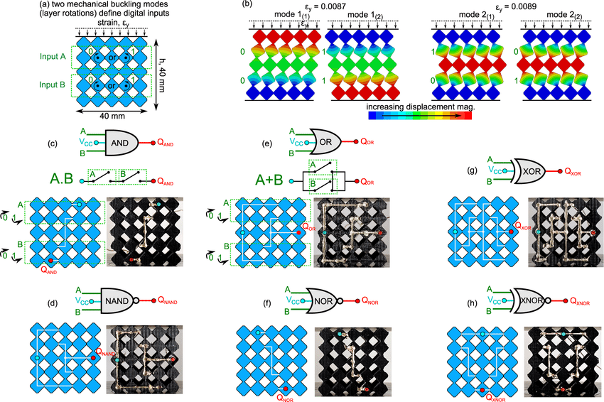
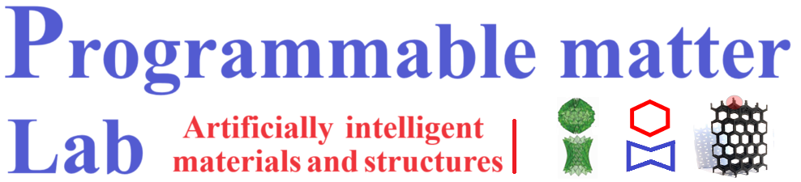

Beyond Nature: An Introduction to Mechanical Metamaterials
For centuries, engineering has been bound by the inherent properties of naturally occurring materials. We design systems based on the known limits of steel, plastic, or concrete. But what if we could create materials with properties not found in nature? This is the revolutionary promise of mechanical metamaterials - a class of materials engineered to exhibit extraordinary properties that go "beyond" the limits of their conventional counterparts.
Unlike traditional materials, whose properties are dictated by their chemical composition, a metamaterial's power comes from its intricate internal architecture. By designing complex patterns at the micro or even nanoscale, we can program the bulk, macro-scale behavior of the material. This bottom-up approach allows us to achieve seemingly impossible feats, like creating materials that are simultaneously ultra-light and ultra-stiff, or that shrink in all directions when compressed.
The "mechanical metamaterial tree of knowledge" illustrates this evolution beautifully. Its roots are in foundational concepts like lattices and chiral structures, but its branches reach into highly advanced, multifunctional domains like sensing, energy harvesting, actuation, and even computation. This represents a paradigm shift from passive structural materials to active, intelligent matter that can interact with its environment.
A Metamaterial is an artificially engineered material with a periodic or non-periodic microstructure that produces unprecedented bulk properties. If the structure doesn't have enough repeating unit cells for its properties to be homogenized, it is often called a Metastructure.
This blog explores the thrilling nexus of geometry, mechanics, and multi-physical stimuli. We'll journey from the fundamental principles to the latest breakthroughs in active, programmable matter that can sense, adapt, and compute.

A Framework for Classification: Decoding the Language of Metamaterials
The world of mechanical metamaterials is a vast and rapidly expanding universe of engineered structures. To navigate this complex landscape, we need a robust classification system—a way to decode the language spoken by their intricate architectures. The "mechanical metamaterial tree of knowledge" provides the perfect visual guide for this. We can dissect the field along three fundamental axes: the Architecture (the roots from which everything grows), the emergent Mechanical Properties (the strong trunk), and the integrated Functionality (the advanced branches reaching toward the future).
1. Classification by Architecture (The Roots)
This primary classification is based on the fundamental geometry and topology of the material's unit cell. It's the blueprint that dictates all subsequent behavior.
-

- Lattice-Based: These consist of interconnected struts and nodes, forming a network in 2D or 3D. Their behavior is governed by how the lattice deforms. Stretching-dominated lattices, like the octet-truss, derive their high stiffness and strength from the axial tension and compression of their struts. In contrast, bending-dominated lattices are far more compliant, as their primary mode of deformation is the bending of individual struts, making them ideal for lightweight cushioning.
- Chiral Structures: A fascinating subset of lattices that lack mirror symmetry, giving them a distinct "handedness." When an axial force is applied, the chiral ligaments cause the central nodes or rings to rotate, inducing a macroscopic twist. This inherent coupling between stretching and twisting is impossible in non-chiral materials and is key to creating novel twisting actuators and shock absorbers. 
- Origami & Kirigami-Based: These structures harness the mechanics of folding and cutting thin sheets. They are distinguished by their incredible deployability and shape-morphing capabilities. The key distinction lies in whether they are rigid-foldable (where deformation occurs only at idealized crease lines, like the Miura-ori) or non-rigid (where the facets between creases are also allowed to bend and stretch), which allows for a richer set of shapes and mechanical responses. 
- Cellular & Foam-like: Unlike the ordered, periodic nature of lattices, these materials have a stochastic (random) architecture of interconnected pores or cells. They can be open-cell (like a sponge) or closed-cell (like styrofoam). Their randomness provides excellent isotropic (direction-independent) energy absorption, making them ubiquitous in protective packaging and helmet liners.
2. Classification by Mechanical Property (The Trunk)
This axis categorizes metamaterials by their exotic and often counter-intuitive bulk mechanical response-the "unnatural" behaviors that their architectures enable.
- Auxetic (Negative Poisson's Ratio): Conventional materials have a positive Poisson's ratio ($v$)-they get thinner when you stretch them. Auxetic materials do the opposite ($v < 0$). This is often achieved with "re-entrant" honeycomb or bowtie-like structures that pull inward when stretched. This property is highly valuable for self-tightening fasteners, smart filters with tunable pores, and form-fitting protective gear. The Poisson's ratio is defined as $v = -\frac{\epsilon_{\text{trans}}}{\epsilon_{\text{axial}}}$, where a negative $v$ means transverse strain ($\epsilon_{\text{trans}}$) has the same sign as axial strain ($\epsilon_{\text{axial}}$).
- Pentamode ("Mechanical Fluids"): These are the closest a solid can get to behaving like a fluid. They are designed to have an enormous bulk modulus ($K$) but a near-zero shear modulus ($G$), meaning they strongly resist compression but offer virtually no resistance to being sheared or twisted. With a ratio of $K/G \gg 1$, they can be used to guide stress waves around an object, forming the basis for acoustic or seismic "invisibility cloaks."
- Negative Stiffness: A truly mind-bending property. While normal materials have positive stiffness (they push back harder the more you compress them), a negative stiffness structure does the opposite over a specific range of deformation. This instability is the key to creating bistable systems that can "snap" dramatically from one stable state to another. When combined with positive-stiffness elements, this can lead to materials with infinite damping capacity, capable of isolating systems from vibrations with unparalleled efficiency.
3. Classification by Functionality (The Branches)
The most forward-looking classification moves beyond passive responses to consider how materials actively sense, process, and respond to their environment. These are the branches where the line between material and machine begins to dissolve.
- Passive Metamaterials: Their engineered properties are static and determined at the time of manufacturing. They perform their function without needing an external energy input. A lightweight lattice core in an airplane wing is a perfect example.
- Active/Actuating Metamaterials: These are dynamic. By embedding stimuli-responsive elements-like shape memory alloys that contract with heat, or magnetic particles that align with a field-we can command the material to change its shape, stiffness, or other properties in real-time.
- Sensing Metamaterials: These structures double as sensors. By integrating piezoresistive pathways that change resistance with strain, or triboelectric layers that generate voltage from friction, the material itself can monitor its own health or measure external forces, as seen in self-powered smart implants. 
- Cognitive Metamaterials: This is the ultimate frontier. By leveraging arrays of bistable elements as mechanical bits ("m-bits"), these materials can perform computation directly within their structure. They can execute logic gates, store information as a pattern of stable states, and make decisions. This paves the way for "computronium"-a material that is, itself, a computer, capable of thinking and responding without a central processor.
Crucially, these classifications are not mutually exclusive. The most advanced systems combine them: a chiral lattice (architecture) with negative stiffness (property) can be integrated with shape-memory alloys to create an active, cognitive device (functionality). This synthesis is what drives the field toward the creation of truly intelligent, programmable matter.
Deployable Structures: A Framework for Understanding

The world of deployable structures is vast, and to make sense of it, experts have developed classification systems. A common approach is to categorize them based on two key axes: Morphology (what they are made of) and Kinematics (how they move).
- Morphology: This axis distinguishes between skeletal/lattice structures (made of interconnected struts and bars) and continuous/surface structures (made of membranes, plates, or shells).
- Kinematics: This axis differentiates between systems made of rigid links (where motion occurs only at discrete hinges) and those using deformable components (where the material itself bends, flexes, or stretches to enable transformation).
This framework helps us understand that a scissor-like pantograph and a folding plate structure are both "rigid link" systems, but they differ in morphology. Similarly, a tensegrity structure and a pneumatic inflatable both rely on "deformable components" but are morphologically distinct. Understanding these categories is key to navigating the diverse landscape of transformable design.
A World of Folds: The Rise of Origami Engineering
The ancient Japanese art of paper folding, origami, has found an extraordinary new purpose in modern engineering. By applying its principles of creases and folds to advanced materials, we can create deployable structures capable of transforming from a compact, stored state into a large, load-bearing configuration in a controlled and predictable manner. This quality, originating from the Latin displicare (to unfold), is invaluable for applications ranging from stowing solar arrays on spacecraft to creating temporary disaster-relief shelters.
Tubular Origami: Strong, Light, and Deployable
One of the most promising applications of these principles is in tubular origami metamaterials. These are hollow cylindrical structures created by folding a flat sheet into a tessellated pattern. This tubular geometry provides several distinct advantages over flat origami designs:
- Greater Structural Integrity: Tubes are inherently resistant to buckling and out-of-plane deformation compared to flat sheets.
- High Specific Strength: The closed cross-section allows for superior load distribution, providing high strength and stiffness for a low weight.
- Superior Energy Absorption: Their geometry is ideal for absorbing and dissipating energy, making them perfect for crash protection and vibration damping.
- Efficient Deployability: Many tubular designs can collapse and expand along a single axis, allowing for simple, targeted deployment and efficient packing.
A Gallery of Folds: Common Origami Patterns
The specific properties of a tubular origami structure are defined by its base crease pattern. Several key patterns have become foundational in this field:
The Miura-ori Fold: Perhaps the most famous rigid fold, the Miura-ori consists of a tessellation of parallelograms, allowing a sheet to be collapsed into a very small area. It exhibits a negative Poisson's ratio, meaning it expands in two directions when stretched in one. Its single degree of freedom makes deployment simple and predictable, but it also means it is a monostable system—it only has one stable resting state.
The Waterbomb Pattern: Composed of a square base with six creases, the waterbomb can be tessellated to form tubes with rich and programmable mechanical characteristics. Its force-deformation curve shows a dramatic increase in stiffness at a specific point, as rigid folding gives way to structural deformation. This allows for the design of structures that are initially flexible but become stiff when needed. Because each unit is bistable in the radial direction, it offers unique opportunities for programming stiffness and shape based on selective stable state distribution.
The Kresling Pattern: This versatile, chiral pattern consists of tessellated triangles formed from a parallelogram base. A key feature of Kresling tubes is their ability to exhibit multi-stability—the capacity to rest in multiple stable configurations. This makes them ideal for applications like crawling robots or mechanical switches that can be toggled between different states. They also exhibit a strong coupling between axial and twisting motions, allowing these structures to perform complex motions that would otherwise require multiple actuators.
This ability to program the very nature of motion by subtly altering geometric patterns is a cornerstone of advanced metamaterial design, enabling a new generation of sophisticated robotic and deployable systems.
Beyond Passive Design: Active & Programmable Matter
While passive metamaterials have fixed properties once manufactured, the next frontier lies in active metamaterials—structures whose properties can be modulated on-demand, in real-time. This is achieved by integrating stimuli-responsive materials into the metamaterial's architecture, creating a powerful link between mechanics and other physical domains. This approach adds a fourth dimension, time, to the design, leading to the concept of 4D printing, where structures can transform themselves in response to an external trigger.
Mechanisms of Actuation
Active metamaterials harness various forms of energy to induce mechanical change. The primary methods include:
Magnetic Actuation
By embedding magnetic particles or permanent magnets into the structure, we can achieve fast, untethered, and contactless control using an external magnetic field. This is particularly useful for small-scale applications, such as the milli-amphibious origami robot, which can roll on land, swim in water, and even jump over obstacles, all controlled by a rotating external magnetic field.
Pneumatic Actuation
Using positive or vacuum air pressure, pneumatic actuators can achieve large, high-energy deformations with relatively simple and cost-effective designs. Soft pneumatic actuators, often fabricated from layered plastic sheets in an origami-inspired structure, are inherently safe and flexible, making them ideal for soft grippers that can handle delicate objects, like the leech-inspired gripper that uses Yoshimura patterns for versatile grasping motions.
Thermal & Electrical Actuation
Shape Memory Alloys (SMAs) and Polymers (SMPs) are materials that can "remember" a previous shape and return to it when heated. This thermal actuation can be triggered directly by environmental temperature or indirectly via an electric current (electro-thermal actuation). This principle is used to create self-deploying biomedical stents from Ni-Ti alloys that expand upon reaching body temperature, or a caterpillar-like robot that crawls via the sequential electrical heating and cooling of its Kresling segments.
The New Frontier: Metamaterials as Intelligent Devices
The deep integration of multifunctionality, sensing, and actuation is pushing mechanical metamaterials beyond simple structural components and into the realm of intelligent devices. These next-generation systems can sense their environment, process information, and respond purposefully—all within their material fabric.
Mechanical Computing and Data Storage
One of the most mind-bending frontiers is mechanical computing. By exploiting the bistable states of an origami or lattice unit cell, we can create mechanical bits ("m-bits") that represent a binary 0 or 1. Actuating a unit cell between its two stable states is analogous to flipping a switch. By arranging these m-bits, it's possible to create mechanical logic gates (AND, OR, NOT) that perform computations without any electronics. Recently, researchers even demonstrated a self-powered metamaterial capable of digital information storage, where data is encoded into the structure of the material itself. While still in its infancy, this field could lead to robust computing systems that can operate in harsh environments where traditional electronics would fail.
Smart Implants and Soft Robotics
Advances in bioinspired materials and actuation are revolutionizing both smart medical implants and the field of soft robotics. These two areas, share the foundational principle of integrating sensing, actuation, and energy harvesting within compliant, adaptive structures.
-
Smart Implants:
Innovative biomedical implants are now designed to interact dynamically with their environment and patients’ physiology. Examples include:-
Self-powered cardiovascular stents: Using triboelectric metamaterials, such stents harvest kinetic energy from pulsatile blood flow to power sensors that continuously monitor arterial pressure or the onset of restenosis, transmitting data wirelessly without batteries or external electronics.
-
Smart orthopedic implants: Spinal and knee implants are being developed that can track bone healing, implant load, or micromotion by harvesting energy from the patient’s activity, enabling real-time feedback for clinicians and reducing the need for repeated imaging.
-
Bioelectronic neural interfaces: Flexible, stretchable implants can provide electrical stimulation or record nerve activity in real time, adapting to the body’s movements and even repairing minor mechanical damage autonomously.
-
Self-powered cardiovascular stents: Using triboelectric metamaterials, such stents harvest kinetic energy from pulsatile blood flow to power sensors that continuously monitor arterial pressure or the onset of restenosis, transmitting data wirelessly without batteries or external electronics.
-
Soft Robotics:
Soft robotics leverages flexible, biomimetic designs using compliant materials and novel actuation mechanisms, enabling robots to perform complex, adaptable motions similar to biological organisms. Current frontiers include:-
Origami-inspired soft robots: Robot designs based on origami folding allow for multi-modal locomotion such as crawling, swimming, or squeezing through narrow gaps. Actuation is achieved via magnetic fields, pneumatics, or electrothermal elements.
-
Grippers for delicate manipulation: Soft grippers, often powered by air or fluid pressure, can gently handle biological tissues, fragile objects, or perform safe interaction within human environments.
-
Untethered micro-/millimeter soft robots: Miniaturized soft robots powered by light, magnetic fields, or chemical reactions can navigate within the body to deliver drugs or conduct localized sensing tasks.
-
Biohybrid robots: These merge living tissues or muscle cells with artificial scaffolds, creating actuators that are self-healing, adaptive, and energy-efficient, blurring the line between living systems and machines.
-
Origami-inspired soft robots: Robot designs based on origami folding allow for multi-modal locomotion such as crawling, swimming, or squeezing through narrow gaps. Actuation is achieved via magnetic fields, pneumatics, or electrothermal elements.
Virtual Engineering: How We Model Programmable Matter
Designing and optimizing the wide spectrum of modern mechanical metamaterials—from lattices and cellular solids to deployable origami, active materials, and multifunctional intelligent devices—demands robust computational tools. Engineers and scientists leverage a suite of modeling approaches, each suited for different questions and length scales:
- Kinematic and Mechanism Analysis: For deployable and reconfigurable structures (including origami and linkage-based metamaterials), kinematic models predict movements, degrees of freedom, and global motion by simplifying components to rigid panels and joints. This is computationally light and excellent for exploring folding, deployment, and motion pathways, though it ignores material and structural responses.
- Lattice and Beam/Bar Network Models: For lattices, trusses, and architected solids, these models represent structures as networks of beams (stretching, bending) or bars (axial). They provide insight into global stiffness, strength, and deformation mechanisms, and can quickly screen vast design spaces.
- Idealized Bar-Hinge and Reduced-Order Models: These approaches bridge the gap, combining both geometric mechanisms and essential material behavior (like folding of origami creases, stretching of panels, or plasticity in bistable elements). They balance efficiency and accuracy, allowing study of force–deformation, bistability, and dynamic response.
- Finite Element Analysis (FEA): The gold standard for detail, FEA subdivides the structure (shells/solids) into many elements. It’s indispensable for capturing local phenomena like buckling, snap-through, stress concentrations, and material failure—and it extends to simulate composites, nonlinearities, and intricate contact scenarios.
- Topology Optimization: This computational design technique automatically optimizes material distribution within a prescribed domain to maximize or minimize objectives such as stiffness, strength, frequency response, or multifunctionality, subject to constraints. It’s invaluable for creating lightweight, architected structures and metamaterials with tailored properties, and often integrates with FEA for high-fidelity evaluation.
- Homogenization and Multiscale Modeling: These approaches bridge length scales by modeling complex architectures (e.g., unit cells) and extracting effective continuum properties (moduli, Poisson’s ratio, etc.) to inform macroscale simulations. Methods include asymptotic homogenization, numerical homogenization using FEA, and analytical schemes.
- Genetic Algorithms and Evolutionary Optimization: Nature-inspired algorithms such as genetic algorithms (GAs) mimic evolutionary processes to solve complex, multi-objective optimization problems. They are particularly effective for discovering optimal or novel architectures, topologies, and material distributions for metamaterials and programmable matter, especially when the design space is large, discontinuous, or non-differentiable. GAs are frequently integrated with FEA and machine learning surrogates to accelerate the inverse design of structures with target properties.
- Multi-Physics Modeling: For programmable, active, or multifunctional materials (magnetic, thermal, electrical, piezoelectric, etc.), multi-physics models integrate mechanics with fields like heat transfer, magnetism, or electric potential. These enable simulation of smart actuators, soft robots, self-sensing implants, and responsive devices.
- Machine Learning and Data-Driven Methods: As design spaces grow, machine learning and inverse design algorithms accelerate discovery. They enable rapid prediction and optimization of structures with tailored properties or multi-objective performance—especially crucial for programmable and intelligent matter.
- Molecular Dynamics (MD) and Particle-Based Methods: For nano- and microscale metamaterials (and smart/active matter), atomistic and particle-based simulation techniques—such as MD or dissipative particle dynamics (DPD)—capture phenomena beyond the reach of classical continuum models.
- Phase Field and Continuum Damage Models: Useful for modeling fracture, microstructure evolution, phase transitions, and programmable transformations in active or shape-morphing materials.
- Isogeometric Analysis (IGA): This advanced computational method bridges CAD and FEA, enabling smooth, precise representation of complex geometry (splines/NURBS). IGA is gaining popularity for analysis of architected materials with curved or intricate features.
- Level Set and Freeform Design Methods: These techniques enable morphing shapes, interfaces, or internal features during the optimization process, frequently applied in conjunction with topology optimization or multi-material programming.
- Reduced-Order and Surrogate Modeling: Techniques like Proper Orthogonal Decomposition (POD), Reduced Basis Methods, and trained machine learning surrogates provide fast approximations of full-order models, greatly accelerating parametric studies and optimization.
- Cellular Automata and Lattice-Boltzmann Methods: Used to simulate emergent discrete phenomena—such as programmable matter behavior, particle self-assembly, or multiphase fluid-structure interactions—particularly valuable at small or mesoscopic scales.
The synergy of these modeling tools empowers researchers to invent, test, and refine novel materials and devices virtually before they are built, guiding the future of engineering across scales and disciplines.
Conclusion: The Road Ahead for Programmable Matter
The evolution of mechanical metamaterials and programmable matter is rapidly redefining the boundaries of engineering and material science. What began as clever geometric tricks to achieve exotic properties has blossomed into a profound paradigm shift: materials are no longer limited to passive structural roles, but are becoming active, adaptive, and even intelligent participants in systems engineering.
As programmable matter matures, its influence will be felt across aerospace, healthcare, robotics, infrastructure, and beyond. These materials promise to deliver structures that repair themselves, medical devices that sense and respond to biological environments, and robots—and even entire built environments—that adapt and learn.
Yet, substantial challenges remain:
- Scalable Manufacturing: Moving from intricate lab-scale prototypes to industrial-scale, reliable production with high precision and repeatability—especially for multi-material and hierarchical architectures—is a fundamental hurdle.
- Integration of Multifunctionality: Seamlessly combining sensing, actuation, computation, and energy harvesting into single material systems, while maintaining robustness, remains a complex task.
- Computational and Design Complexity: The design spaces for programmable materials are vast and multi-dimensional. Overcoming these challenges will require new algorithms in topology optimization, machine learning, and generative design—supported by growing computational power and data-driven approaches.
- Real-World Deployability: Ensuring that programmable matter can withstand variable, harsh, or unpredictable operating environments is critical for real-world adoption.
- Standardization and Theory: There is a growing need for systematic frameworks, standards, and predictive theories that unify the vast range of observed functionalities and facilitate robust design.
The future trajectory of programmable matter is profoundly multidisciplinary: It will require the collaborative efforts of engineers, physicists, computer scientists, chemists, material scientists, and biologists. By pushing the exploitable nexus of geometry, multi-physics, and digital manufacturing, we are on the cusp of enabling matter that can sense, decide, adapt, and act—blurring the lines between material and machine, structure and system, hardware and intelligence.
As we look ahead, we envision a world where discovering, programming, and producing new materials is as routine as writing computer code—and where the physical world itself becomes as programmable, interactive, and intelligent as the digital one. The journey from static structures to truly cognitive, autonomous materials will not only redefine how we build things, but how we think about matter itself.
The next revolution in engineering will be written in the language of function, adaptability, and intelligence—programmed directly into the very fabric of the world around us.
References
- Sinha, P., & Mukhopadhyay, T. (2023). Programmable multi-physical mechanics of mechanical metamaterials. Materials Science and Engineering: R: Reports, 155, 100745. https://doi.org/10.1016/j.mser.2023.100745
- Sharma, A., Naskar, S., & Mukhopadhyay, T. (2025). Multi-physically programmable tubular origami metamaterials: Exploitable nexus of geometry, folding mechanics and stimuli-responsive physics. Advanced Science. https://doi.org/10.1002/advs.202505089
- Programmable Matter Lab. (n.d.). Programmable Matter Lab – Tanmoy Mukhopadhyay, University of Southampton. https://www.tmukhopadhyay.com/programmable-matter-lab
- Advanced Materials Cover. (2025). Advanced Materials. https://advanced.onlinelibrary.wiley.com/doi/pdf/10.1002/adma.202570116
- Jiao, P., Mueller, J., Raney, J. R., et al. (2023). Rational design of mechanical metamaterials through digital processing. Nature Communications, 14, 6004. https://doi.org/10.1038/s41467-023-41679-8
- Ma, W. W. S., et al. (2025). Multi-physical lattice metamaterials enabled by additive manufacturing: Design principles, interaction mechanisms, and multifunctional applications. Advanced Science, 12(8), 2405835. https://doi.org/10.1002/advs.202405835
- Karlsruhe Institute of Technology (KIT). (n.d.). Virtual design of 3D chiral metamaterials. http://materials.kit.edu/307.php
- Zhao Lab. (2021). Stretchable origami robotic arm with omnidirectional bending and twisting. Proceedings of the National Academy of Sciences, 118(43), e2110023118. https://doi.org/10.1073/pnas.2110023118
- Natural Origami. (2016, June 29). Mountains and valleys: Exploring Maekawa’s theorem. https://naturalorigami.wordpress.com/2016/06/29/mountains-and-valleys-exploring-maekawas-theorem/
- OriLab. (n.d.). Kresling. https://orilab.art/natural/kresling
- Wikimedia Commons. (n.d.). Spherical deployable mechanism [GIF]. https://upload.wikimedia.org/wikipedia/commons/9/9f/Spherical_Deployable_Mechanism.gif
- Kwakernaak, L. J., & van Hecke, M. (2023). Counting and sequential information processing in mechanical metamaterials. Physical Review Letters, 130, 268204. https://doi.org/10.1103/PhysRevLett.130.268204
- Gao, L., et al. (2019). Magnetic actuation of flexible microelectrode arrays for neural activity recordings. Nano Letters, 19(11), 8032–8039. https://doi.org/10.1021/acs.nanolett.9b03232
- El Helou, C., Buskohl, P. R., & Tabor, C. E., et al. (2021). Digital logic gates in soft, conductive mechanical metamaterials. Nature Communications, 12, 1633. https://doi.org/10.1038/s41467-021-21920-y
- Vasconcelos, A. C. A., et al. (2025). Hybrid mechanical metamaterials: Advances of multi-material, hierarchical, and multifunctional designs. Heliyon, 11(6), e20196. https://www.sciencedirect.com/science/article/pii/S2405844025003652
- Suhas, P., et al. (2025). A review on mechanical metamaterials and additive manufacturing strategies for biomedical applications. Materials Advances, 6(3), 874–899. https://pubs.rsc.org/en/content/articlehtml/2025/ma/d4ma00874j
- Zhang, L., et al. (2025). Mechanical metamaterials with negative Poisson’s ratio: Topology-property relationships and deformation mechanisms. Composite Structures. https://www.sciencedirect.com/science/article/abs/pii/S0141029625002287
- Ma, F. (2025). Acoustic and mechanical metamaterials for various applications – A brief review. Frontiers in Materials, 12, 1626945. https://www.frontiersin.org/journals/materials/articles/10.3389/fmats.2025.1626945/full
- Imada, R., et al. (2025). Maxwell origami tube. Physical Review Research, 7, 013032. https://link.aps.org/doi/10.1103/PhysRevResearch.7.013032
- Yan, S., et al. (2025). Snap-through instability in mechanical metamaterials. Rapid Prototyping Journal, 31(4). https://onlinelibrary.wiley.com/doi/full/10.1002/rpm.20240035
- Wu, R. Y., et al. (2023). Programmable metamaterials. Programmable Materials, 1(1), e97F91407E95B99C8CDE5A4238BF0E2E6. https://www.cambridge.org/core/journals/programmable-materials/article/programmable-metamaterials/97F91407E95B99C8CDE5A4238BF0E2E6
- Feng, H., et al. (2018). Twist of tubular mechanical metamaterials based on waterbomb origami. Scientific Reports, 8, 8983. https://www.nature.com/articles/s41598-018-27877-1
- Ma, X., et al. (2025). Programmable metamaterials with perforated shell group for high-density information storage. Frontiers in Materials, 12. https://pmc.ncbi.nlm.nih.gov/articles/PMC12199329/
- Yu, X., et al. (2017). A self-powered triboelectric nanosensor for monitoring blood flow. ACS Nano, 11(11), 11027-11034. https://doi.org/10.1021/acsnano.7b05674
- Seifert, T., Ratajski, T., et al. (2020). Smart implants in orthopedic surgery—From passive devices to active sensing and locally acting systems. Advanced Drug Delivery Reviews, 163-164, 23-46. https://doi.org/10.1016/j.addr.2020.07.013
- Minev, I. R., et al. (2015). Electronic dura mater for long-term multimodal neural interfaces. Science, 347(6218), 159–163. https://doi.org/10.1126/science.1260318
- Rus, D., & Tolley, M. T. (2015). Design, fabrication and control of soft robots. Nature, 521, 467–475. https://doi.org/10.1038/nature14543
- Shintake, J., et al. (2018). Soft robotic grippers. Advanced Materials, 30(29), 1707035. https://doi.org/10.1002/adma.201707035
- Kim, Y., et al. (2018). Printing ferromagnetic domains for untethered fast-transforming soft materials. Nature, 558, 274–279. https://doi.org/10.1038/s41586-018-0185-4
- Vining, K. H., & Mooney, D. J. (2017). Mechanical forces direct stem cell behaviour in development and regeneration. Nature Reviews Molecular Cell Biology, 18(12), 728–742. https://doi.org/10.1038/nrm.2017.108
Spotlight on the Programmable Matter Lab
The lab focuses on designing and analyzing structures that are not only mechanically robust but also actively responsive to multiple external stimuli. Research spans across deployable origami structures, multi-function metamaterials, advanced manufacturing, and integration of materials intelligence into engineering devices.